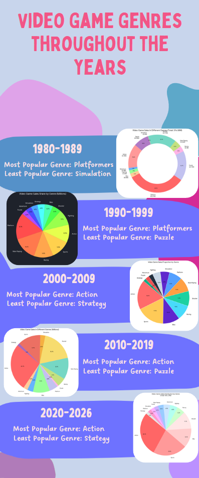

Welcome to My Data Analysis Project
This is my second project, where I applied my data analysis skills learnt over the course of the term to explore a real-world dataset. This dataset investigated videogames that had over 100,000 sales.
What Does It Include?
My data analysis project was designed to show off my skills in data analysis. It includes:
- A large dataset that includes over 16,000 entries
- A dashboard with visualizations and charts derived from the dataset
- Graphs, including bar charts, scatter plots and scorecharts
- Splicers which allow for interacting with the dashboard
- A dark blue theme that integrates nicely with my website design
My Reflection
This was my second project, where I applied my data analysis skills to explore a real-world dataset. I am happy with my project, both with the development and the completed product.
This project allowed me to apply my data analysis skills that I had been learning throughout the term, but actually using them to analyze and visualize the data through both an infographic and interactive dashboard.
I am proud of the work I put into this project and the skills I developed throughout the process. Especially problem solving and troubleshooting when I was faced with challenges such as learning how to implement slicers to make my dashboard interactive and much more interesting.
When designing the dashboard, I had to choose a color scheme that would be visually appealing and match well with the rest of my website. I chose a dark blue/grey color scheme because it matched well and I could change the text colour to white, contrasting well with the dark background and therefore making it easier to read.
A challenge that I faced was ensuring the dashboard was responsive when adding slicers. At first the slicers would not change the graphs and scorecharts, however I was able to fix it by researching the issue and adding pivot tables. The pivot tables allowed me to pull the important data from the dataset and then use it to create the graphs and scorecharts. This made using the slicers much easier since everything was using the same main dataset which let the slicers change the pivot tables which then changes all the charts and graphs.
Overall, this project was hard at first but after getting familiar with the tools on google sheets it became much easier and I was able to create a fully responsive dashboard that I am proud of. This project taught me a lot of the skills I would need to actually use google sheets in a workplace setting, which is a valuable skill to have.
My Dashboard
This is an embed of my dashboard:
My Infographic
This is an image of my infographic:
